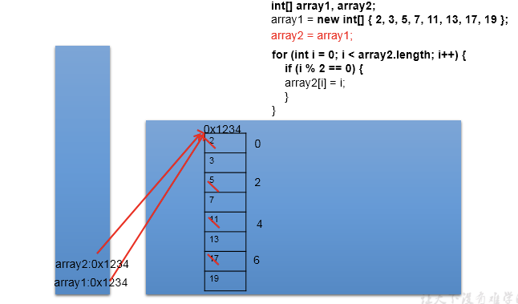

1 概述
数组的理解：数组(Array)，是多个相同类型数据一定顺序排列的集合，并使用一个名字命名，并通过编号的方式对这些数据进行统一管理。
数组相关的概念：
- 数组名
- 元素
- 角标、下标、索引
- 数组的长度：元素的个数
数组的特点：
- 数组是序排列的
- 数组属于引用数据类型的变量。数组的元素，既可以是基本数据类型，也可以是引用数据类型
- 创建数组对象会在内存中开辟一整块连续的空间
- 数组的长度一旦确定，就不能修改。
数组的分类：
- 照维数：一维数组、二维数组、。。。
- 照数组元素的类型：基本数据类型元素的数组、引用数据类型元素的数组
数据结构：
- 数据与数据之间的逻辑关系：集合、一对一、一对多、多对多
- 数据的存储结构：
- 线性表：顺序表（比如：数组）、链表、栈、队列
- 树形结构：二叉树
- 图形结构
算法：
- 排序算法
- 搜索算法
- …
2 一维数组
2.1 一维数组的声明与初始化
//正确的方式：
int num;//声明
num = 10;//初始化
int id = 1001;//声明 + 初始化
int[] ids;//声明
//1.1 静态初始化:数组的初始化和数组元素的赋值操作同时进行
ids = new int[]{1001,1002,1003,1004};
//1.2动态初始化:数组的初始化和数组元素的赋值操作分开进行
String[] names = new String[5];
int[] arr4 = {1,2,3,4,5};//类型推断
//错误的方式：
// int[] arr1 = new int[];
// int[5] arr2 = new int[5];
// int[] arr3 = new int[3]{1,2,3};2.2 一维数组元素的引用：通过角标的方式调用。
//数组的角标（或索引从0开始的，到数组的长度-1结束。
names[0] = "王铭";
names[1] = "王赫";
names[2] = "张学良";
names[3] = "孙居龙";
names[4] = "王宏志";//charAt(0)2.3 数组的属性：length
System.out.println(names.length);//5
System.out.println(ids.length);说明：
- 数组一旦初始化，其长度就是确定的。arr.length
- 数组长度一旦确定，就不可修改。
2.4 一维数组的遍历
for(int i = 0;i < names.length;i++){
System.out.println(names[i]);
}2.5 一维数组元素的默认初始化值
- 数组元素是整型：0
- 数组元素是浮点型：0.0
- 数组元素是char型：0或'\u0000'，而非'0'
- 数组元素是boolean型：false
- 数组元素是引用数据类型：null2.6 一维数组的内存解析
3 二维数组
3.1 如何理解二维数组
数组属于引用数据类型，数组的元素也可以是引用数据类型，一个一维数组A的元素如果还是一个一维数组类型的，则，此数组A称为二维数组。
3.2 二维数组的声明与初始化
//正确的方式：
int[] arr = new int[]{1,2,3};//一维数组
//静态初始化
int[][] arr1 = new int[][]{{1,2,3},{4,5},{6,7,8}};
//动态初始化1
String[][] arr2 = new String[3][2];
//动态初始化2
String[][] arr3 = new String[3][];
//也是正确的写法：
int[] arr4[] = new int[][]{{1,2,3},{4,5,9,10},{6,7,8}};
int[] arr5[] = {{1,2,3},{4,5},{6,7,8}};//类型推断
//错误的方式：
// String[][] arr4 = new String[][4];
// String[4][3] arr5 = new String[][];
// int[][] arr6 = new int[4][3]{{1,2,3},{4,5},{6,7,8}};3.3 如何调用二维数组元素
System.out.println(arr1[0][1]);//2
System.out.println(arr2[1][1]);//null
arr3[1] = new String[4];
System.out.println(arr3[1][0]);
System.out.println(arr3[0]);3.4 二维数组的属性
System.out.println(arr4.length);//3
System.out.println(arr4[0].length);//3
System.out.println(arr4[1].length);//43.5 遍历二维数组元素
for(int i = 0;i < arr4.length;i++){
for(int j = 0;j < arr4[i].length;j++){
System.out.print(arr4[i][j] + " ");
}
System.out.println();
}3.6 二维数组元素的默认初始化值
规定：二维数组分为外层数组的元素，内层数组的元素
int[][] arr = new int[4][3];
- 外层元素：arr[0],arr[1]等
- 内层元素：arr[0][0],arr[1][2]等
数组元素的默认初始化值 ：
针对于初始化方式一：比如：int[][] arr = new int[4][3];
- 外层元素的初始化值为：地址值
- 内层元素的初始化值为：与一维数组初始化情况相同
针对于初始化方式二：比如：int[][] arr = new int[4][];
- 外层元素的初始化值为：null
- 内层元素的初始化值为：不能调用，否则报错。
3.7 二维数组的内存结构
4 数组的常见算法
4.1 数组的创建与元素赋值
杨辉三角（二维数组）、回形数（二维数组）、6个数，1-30之间随机生成且不重复。
4.2 针对于数值型的数组
最大值、最小值、总和、平均数等。
4.3 数组的赋值与复制
int[] array1,array2;
array1 = new int[]{1,2,3,4};赋值：array2 = array1;
如何理解：将array1保存的数组的地址值赋给了array2，使得array1和array2共同指向堆空间中的同一个数组实体。

复制：
array2 = new int[array1.length];
for(int i = 0;i < array2.length;i++){
array2[i] = array1[i];
}如何理解：我们通过new的方式，给array2在堆空间中新开辟了数组的空间。将array1数组中的元素值一个一个的赋值到array2数组中。
4.4 数组元素的反转
//方法一：
// for(int i = 0;i < arr.length / 2;i++){
// String temp = arr[i];
// arr[i] = arr[arr.length - i -1];
// arr[arr.length - i -1] = temp;
// }
//方法二：
// for(int i = 0,j = arr.length - 1;i < j;i++,j--){
// String temp = arr[i];
// arr[i] = arr[j];
// arr[j] = temp;
// }4.5 数组中指定元素的查找：搜索、检索
线性查找：
- 实现思路：通过遍历的方式，一个一个的数据进行比较、查找。
- 适用性：具有普遍适用性。
二分法查找：
- 实现思路：每次比较中间值，折半的方式检索。
- 适用性：（前提：数组必须有序）
4.6 数组的排序算法
理解：
- 衡量排序算法的优劣：时间复杂度、空间复杂度、稳定性
- 排序的分类：内部排序 与 外部排序（需要借助于磁盘）
- 不同排序算法的时间复杂度
- 手写冒泡排序
int[] arr = new int[]{43,32,76,-98,0,64,33,-21,32,99};
//冒泡排序
for(int i = 0;i < arr.length - 1;i++){
for(int j = 0;j < arr.length - 1 - i;j++){
if(arr[j] > arr[j + 1]){
int temp = arr[j];
arr[j] = arr[j + 1];
arr[j + 1] = temp;
}
}
} 5 Arrays工具类的使用
理解：
- 定义在java.util包下。
- Arrays:提供了很多操作数组的方法。
使用：
//1.boolean equals(int[] a,int[] b):判断两个数组是否相等。
int[] arr1 = new int[]{1,2,3,4};
int[] arr2 = new int[]{1,3,2,4};
boolean isEquals = Arrays.equals(arr1, arr2);
System.out.println(isEquals);
//2.String toString(int[] a):输出数组信息。
System.out.println(Arrays.toString(arr1));
//3.void fill(int[] a,int val):将指定值填充到数组之中。
Arrays.fill(arr1,10);
System.out.println(Arrays.toString(arr1));
//4.void sort(int[] a):对数组进行排序。
Arrays.sort(arr2);
System.out.println(Arrays.toString(arr2));
//5.int binarySearch(int[] a,int key)
int[] arr3 = new int[]{-98,-34,2,34,54,66,79,105,210,333};
int index = Arrays.binarySearch(arr3, 210);
if(index >= 0){
System.out.println(index);
}else{
System.out.println("未找到");
}6 数组的常见异常
- 数组角标越界异常：ArrayIndexOutOfBoundsException
int[] arr = new int[]{1,2,3,4,5};
// for(int i = 0;i <= arr.length;i++){
// System.out.println(arr[i]);
// }
// System.out.println(arr[-2]);
// System.out.println("hello");- 空指针异常：NullPointerException
//情况一：
// int[] arr1 = new int[]{1,2,3};
// arr1 = null;
// System.out.println(arr1[0]);
//情况二：
// int[][] arr2 = new int[4][];
// System.out.println(arr2[0][0]);
//情况三：
String[] arr3 = new String[]{"AA","BB","CC"};
arr3[0] = null;
System.out.println(arr3[0].toString());小知识：一旦程序出现异常，未处理时，就终止执行。